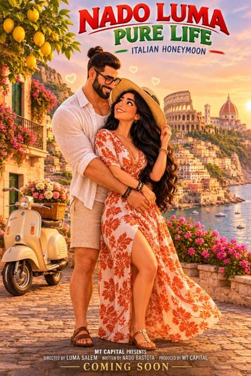
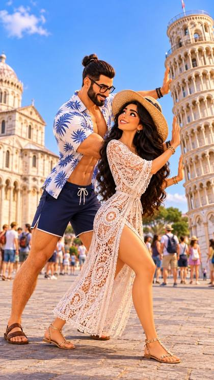
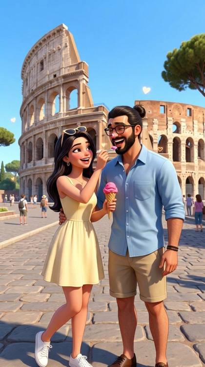
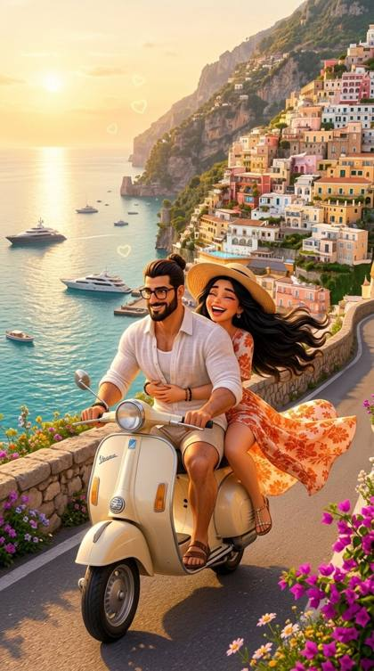
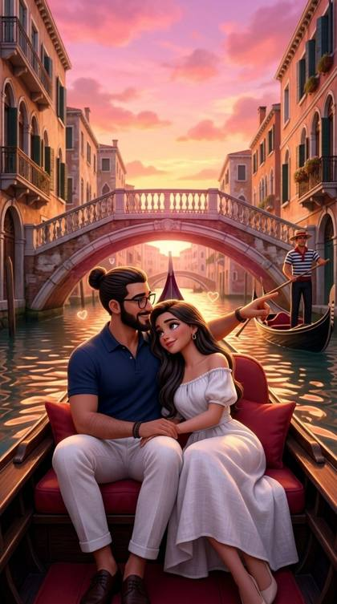
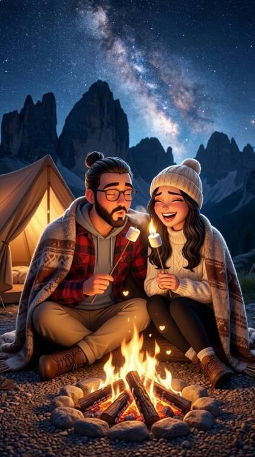
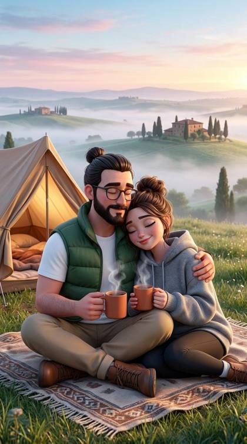

ده بالظبط اللي اتعمل بيه الحلقة اللي شفتها. خمس خطوات، كل البرومبتات جاهزة، وتقدر تكتب فيها شكلك وشكل شريكك وتنسخها على طول.







خلّصت ٠ من ٥ خطوات
ارفع صورة الريفرنس مع كل طلب، واكتب الميزة صريحة بالإنجليزي، زي same man bun أو same round glasses.
املا خانة اللبس والوقت في كل مشهد بحاجة مختلفة: الصبح، الغروب، بالليل، تحت النجوم.
كمّل على الأداة التانية: من Gemini لـChatGPT أو العكس، بنفس البرومبت ونفس الريفرنس.
اكتب حركة واحدة بس في المقطع، وابدأ بصورة الوشوش فيها كبيرة وواضحة.
خلي CapCut يعمل الكابشن من الصوت نفسه بـAuto captions بدل ما تكتبه بإيدك.
اعمل منشن لما تنزّلها، هشوفها وأقولك رأيي. وتابع علشان الحلقة الجاية هشرح فيها إزاي تعمل مسلسل كامل بنفس الشخصيات.